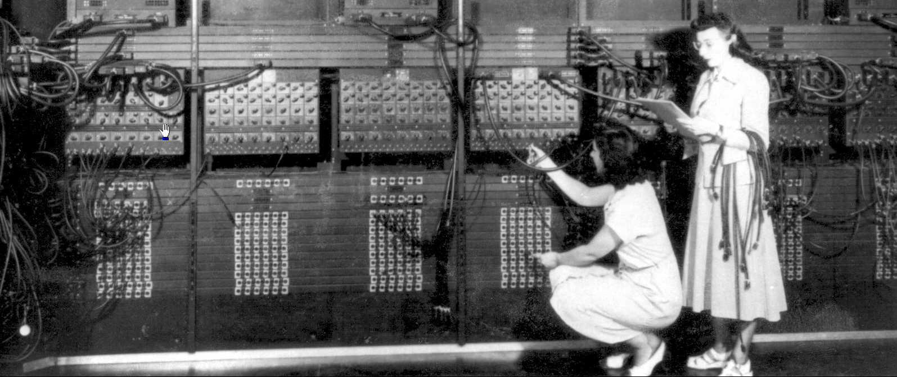
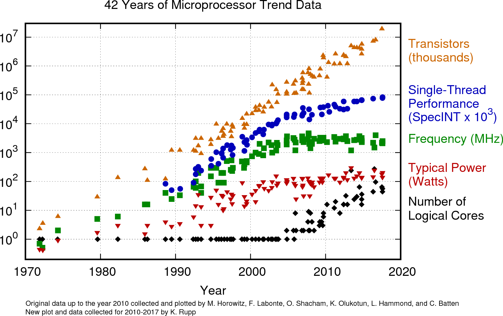
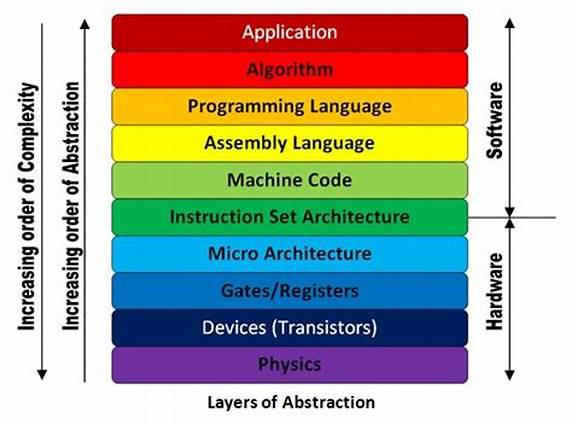

public: True class: center, middle # 计算机系统中的抽象 蒋炎岩 <jyy@nju.edu.cn> 南京大学计算机软件研究所 --- # 概述 > AbstractMachine??? > > * 为什么需要它？ ---- * 复杂系统的构造与解释 * 理解计算机系统 * 计算机系统中的抽象 * AbstractMachine 编程 --- class: center, middle # 复杂系统的构造与解释 --- # 造一艘航母？ 解放军 2012 年正式交付了第一艘航母 * 瓦良格号现代化改装 (2005-2012) ---- 超级复杂的系统 * 舰船设施如何配置？ * 如何实现高可靠/容灾？ --- # USS Midway (CV-41), 1955 18 个月建造完成，服役 41 年 (沙漠风暴行动旗舰) .center[<img src="../static/wiki/ics/2019/img/CV-41.jpg" width="640px"/>] --- # USS Langley (CV-1), 1921 美国海军第一艘航母 (aircraft carrier)，由.blue[运煤船]改造而来 .center[<img src="../static/wiki/ics/2019/img/CV-1.jpg" width="640px"/>] --- # Santa María, 1492 大型三桅横帆船，哥伦布发现新大陆时的旗舰 .center[<img src="../static/wiki/ics/2019/img/santa_maria.jpg" width="500px"/>] --- # 复杂系统是由简单系统演化而来 人类很难直接设计出 “绝对完美” 的复杂系统 * 实际：从 minimal, simple, and usable 的系统不断经过 local modifications (trial and errors) * 航母/战斗机 * 计算机硬件 * 操作系统 * 编译器/程序设计语言 * …… * 需求和系统设计/实现螺旋式迭代 --- class: center, middle # 理解计算机系统 --- # .float-right[<img src="../static/wiki/os/2019/img/turing-machine.png" width="400px"/>] 计算的先驱 Alan Turing's “machine” (1936) * 并没有真正 “造出来” * 纸带 + 自动机 ---- * 纸带 (内存)：`std::map<int,char> M` * 读写头 `pos` * 自动机：一个程序 * `pos++`/`pos--`/`M[pos] = 0`/`M[pos] = 1` * `if (M[pos] == 1) { } else { }` * `goto label` * `exit()` --- # Turing Machine 定义了什么是 “计算” * 证明了 halting problem 是不可判定 (undecidable) 的 * 在此基础上构建了 the theory of computation * computability theory (什么可以算？) * complexity theory (什么可以算得多快？) * ... --- # 进入电子计算机时代 .center[] 上面就是类似 Turing Machine 的程序 * 20 word memory * 纸带输入/打孔输出 (IBM card reader & cardpunch) --- # 通用计算机 汇编语言/高级语言的出现、丰富的 I/O 设备 .center[<img src="../static/wiki/os/2019/img/1950s.jpg" width="640px"/>] --- # 中断和异常 I/O 设备相比于 CPU 来说实在太慢了！ * 避免交互式设备的轮询 * 实现设备的异步通知 ```c do { code = kbd_read(); } while (code == _KEY_NONE); process_keycode(); ``` ---- 中断/异常：硬件驱动的函数调用 * 相当于在程序执行到任何位置时，更改下条指令为 “`call interrupt_entry`” --- # 中断机制：分时多线程 ```c void f() { while (1) printf("a"); } void g() { while (1) printf("b"); } ``` 能否让 `f()` 和 `g()` “同时” 在处理器上执行？ * 在 `f()` 执行时发生中断，将 `f()` 的所有执行现场保存 * 恢复 `g()` 的执行现场 * ... --- # 虚拟存储 进程 = 线程 + 虚拟地址空间 * 让 `f()` 和 `g()` 都看到自己独立的内存副本 * 内存由另一个程序 (操作系统) 管理 ---- 就是我们今天的进程模型！ * `gcc a.c` * `readelf -a a.out` → 二进制文件的全部信息 --- # 多处理器系统：动机 提高单个处理器性能，performance/watt 收益太小 * 不如多个处理器共享内存 .center[] --- # 演化视角的 AbstractMachine AbstractMachine 代表了计算机硬件发展历史上若干里程碑的.red[机制]，它们从根本上改变了计算机软件的存在方式 * TRM 通用 “计算” 的抽象 * IOE 输入/输出设备管理 * CTE 中断/异常 * VME 虚拟存储 * MPE 多处理器 --- # 抽象视角的 AbstractMachine 一台具体计算机上的计算机系统栈 .center[] ---- 但如果我们只是为了.red[理解计算机系统]，而不是构造生产系统？ * Programming Language 之下可以只有一个抽象 --- class: center, middle # 计算机系统中的抽象 --- # 抽象的意义 “屏蔽下层系统的复杂细节，使用简洁的机制实现底层的控制” (trade-offs) * 得到：.red[控制了复杂性] * 失去：.red[精确控制] ---- 例子：汇编语言 vs. 高级语言 * 自然语言：需求 * 高级语言：精确描述我要做什么 * 汇编语言：描述如何用机器指令完成 --- # Write Once, Run Everywhere? C 做到了！ * 数据和控制 * 启动接口 (`argc`, `argv`, `envp`) * 标准库 -- count: false ---- C 是对 “计算” 的非常好的抽象 * 类似于 Turing Machine，但更实用 * 预编译指令 * 标准库 * ... --- # TRM: Freestanding C 语言运行环境 代码 + 数据 (静态) + 堆 (`_heap`) + bootstrap stack * 为什么是 C 语言？ * C++/Go/Rust... 其实都可以 * 有限的 C++ 支持 (无 exception 和 RTTI) * 未来可能有 AbstractMachine 的 Go/Rust binding ---- Trade offs * 得到：统一简洁的接口 (for teaching and learning) * 失去：不连续内存、热插拔内存、…… (practical) --- # AbstractMachine 的设计取舍 提供.red[最少]机制以实现现代计算机系统软件 * IOE (仅提供一些系统无关的设备抽象) * CTE (简化、统一、相对低效的中断处理) * VME (基于页的映射，忽略硬件实现) * MPE (假设 race-freedom、简化的系统模型) --- # 八卦 (1)：PA 的由来 yzh 觉得……好像只有 OS 不够劲啊 * 而且 OSLab 上来就把 x86 的手册丢给你好像不太好玩 ---- 那就让大家好好读读 x86 手册吧……那…… * 就做个模拟器好啦，反正就是照着手册写一遍的事 * 于是就有了 PA：简易 x86 全系统模拟器 * 目的是让大家知道“什么是计算机” --- # 八卦 (2)：PA 的后续 某天我们几个在袁妈办公室讨论，觉得虽然体系里的确什么都有了，但还是不够劲啊，不如我们玩个大的吧： .red[.center[自己写个 CPU 上面跑自己的 OS 上面跑自己编译器编译出来的应用程序 应用程序可以是 NEMU NEMU 又跑自己的 OS 咦好像绕圈圈了……]] ---- 好吧我承认这有点炫酷 * 但用 Verilog (Chisel) 写个 x86 的 CPU 好像夸张了点，万一哪个地方没搞对不就全垮了么 --- # 八卦 (3)：问题的解决 .float-right[<img src="../static/wiki/ics/2018/slides/img/projectn.jpg" width=150px/>] 想法挺简单的：我们能不能在.red[一套 API]上开发所有的.red[系统程序]，这套 API 又能在残疾/牛逼等.red[各种硬件]上实现？ * 敢想就敢造：自制 MIPS32 处理器、MIPS32-NEMU (boots Linux)、自制操作系统、自制应用程序 (窗口管理器等) * 操作系统层所有东西，换个选项就能上 x86 跑 (哇) -- count: false ---- 说来也简单，CPU 最原始的抽象就是一个最小的 C 程序的 Runtime，然后以 extension API 的形式访问 CPU 的功能： * I/O (IOE), 中断/异常 (CTE), 虚拟存储 (VME), 多处理器 (MPE) * 系统可以根据 extension 存在情况调整行为 (例如 OS 是否开启多核) --- # AbstractMachine：一个体现了系统演化的抽象层 抽象带来的好处 * 写操作系统再也不用汇编了 (如果你们看过一些 “自己动手写操作系统” 类的书，前面讲 x86 的部分就根本不想看下去了) * 在正确的抽象层上写代码能减少细节纠结 * 软件正确性可以互相验证 (软件在 native 调试，调试好了再上体系结构运行) ---- 在抽象层上工作带来的额外好处 * trace * model checking * formal verification --- class: center, middle # AbstractMachine 编程 --- # TRM: 编写可移植的 C 代码 C 语言是对 “计算” 的通用抽象 (回顾 Turing Machine) * x86 用栈传递参数 (`[%ebp+8]`, `[%ebp+12]`)，…… * x64 用寄存器 (`rdi`, `rsi`, `rdx`, `rcx`, `r8`, `r9`) + 堆栈传递参数，在 Windows 和 Linux 上行为还有差异 * 其他计算机的数据大小、字节序等都不一样啊 ---- .red[对正确性的更高要求] * 编写的 C 程序遵循.red[可移植]的规范，使它能在不同平台上运行 --- # 原则：跟着标准走 C 标准为了兼容尽可能多的计算机，不可避免会有规定不全之处： * 类型大小：`char <= short <= int <= long` (指针？) * `char` 有无符号？ * 字节序：大端/小端 * 结构体对齐：结构体只保证按顺序存储 * 求值顺序：`printf("%c%c", getchar(), getchar());` (今天标准设计者肯定想把这条去掉，无奈这样会让很多老代码违背标准) ---- 做到 UB-free * 内存越界、有符号数溢出…… --- # 数据类型：例子 在你的机器上，一切正常，在risc-v上出现问题： ```c char s[MAX+1]; int i; for (i = 0; i < MAX; i++) if (((s[i] = getchar()) == '\n') || (s[i] == EOF)) break; s[i] = '\0'; ``` ---- 应该如何修复？ --- # 字节序：例子 ```c // 发送方, little-endian (x86) uint32_t x = 0x12345678; // [78,56,34,12] write(sock, &x, sizeof(x)); // 接收方, big-endian (MIPS32) uint32_t x; read(sock, &x, sizeof(x)); // Get 0x78563412 ``` ---- 应该如何修复？ > `man 3 byteorder` --- # IOE: 几乎任何事！ 你们已经玩过的 videotest, MicroBench, LiteNes, ... * 所有这些程序都是.red[可移植]的 * 能在本地 (Linux native, 任何体系结构)、MIPS32 虚拟机、x86 虚拟机等执行 (要求`sizeof(int) >= 4`) ---- ```c int main() { _ioe_init(); xmap_init(); fce_load_rom(rom_mario_nes); fce_init(); fce_run(); return 1; } ``` --- # AM Extensions: 下学期再见 本学期 (ICS) * 实现 x86 上的 AbstractMachine API * 理解 AM 和它以下的部分 ---- 下学期 (OS) * 基于 AbstractMachine 实现多处理器操作系统 * 理解 AM 和它以上的部分